Post casa: 4 stili più morbidi
Stessi contenuti e stessa impaginazione, cambiano colori e caratteri. Per ogni stile: copertina, grafico, mestieri.
A · Rosso più tenue
stesso rosso un po’ più chiaro, caratteri meno stretti, etichette bianche dritte
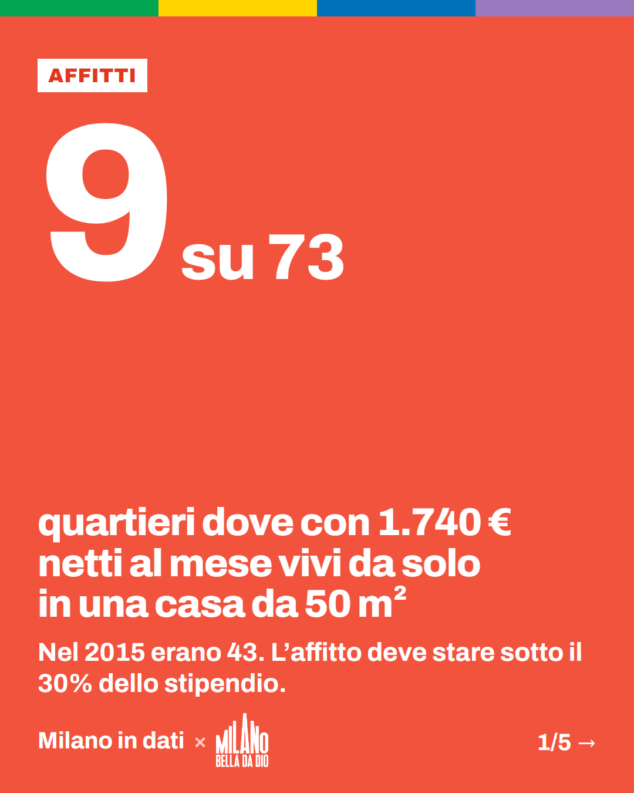
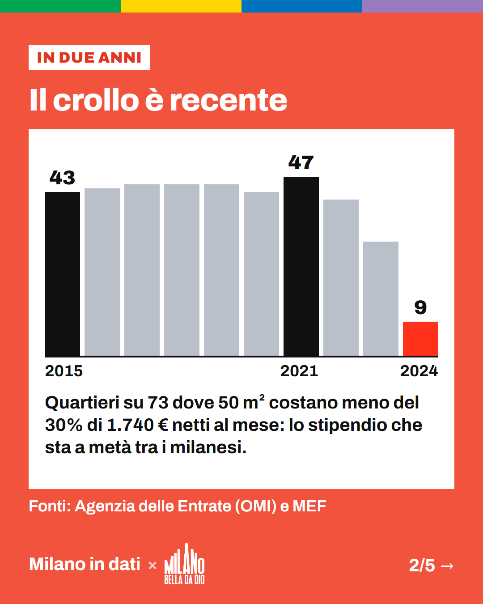
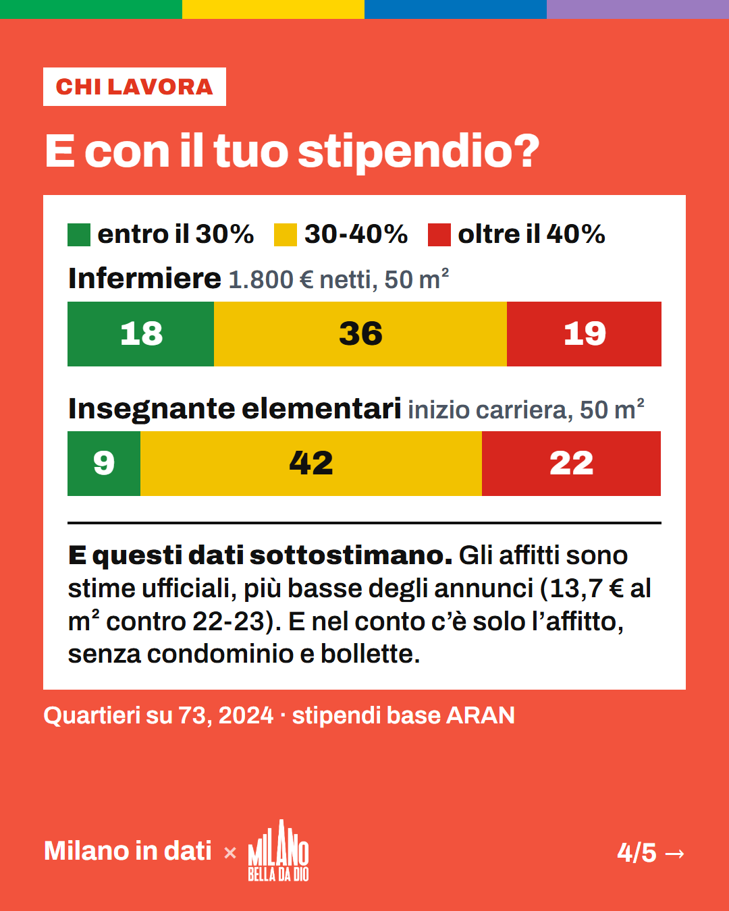
B · Bianco e rosso
fondo bianco, rosso solo su numero ed etichette
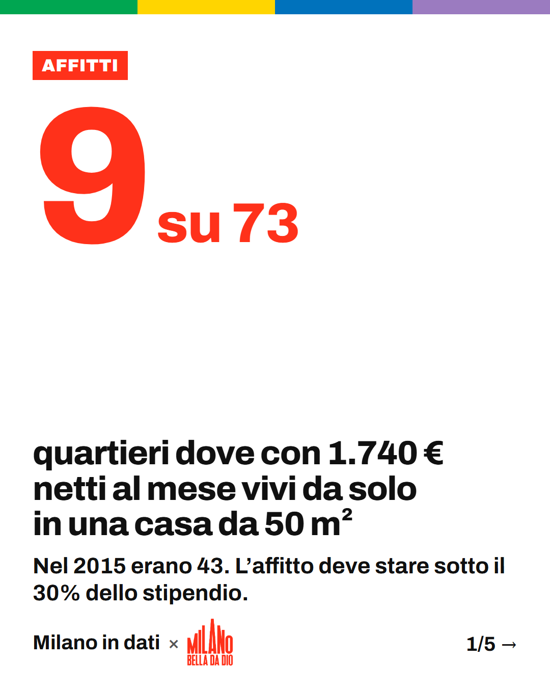
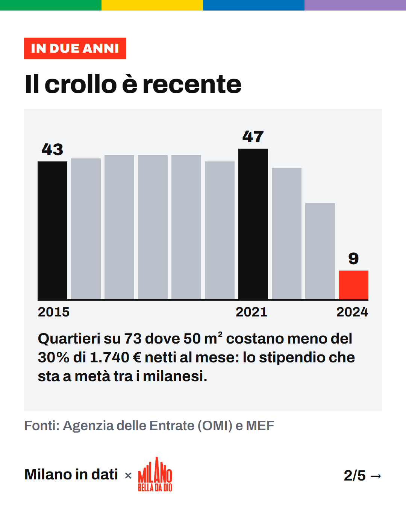
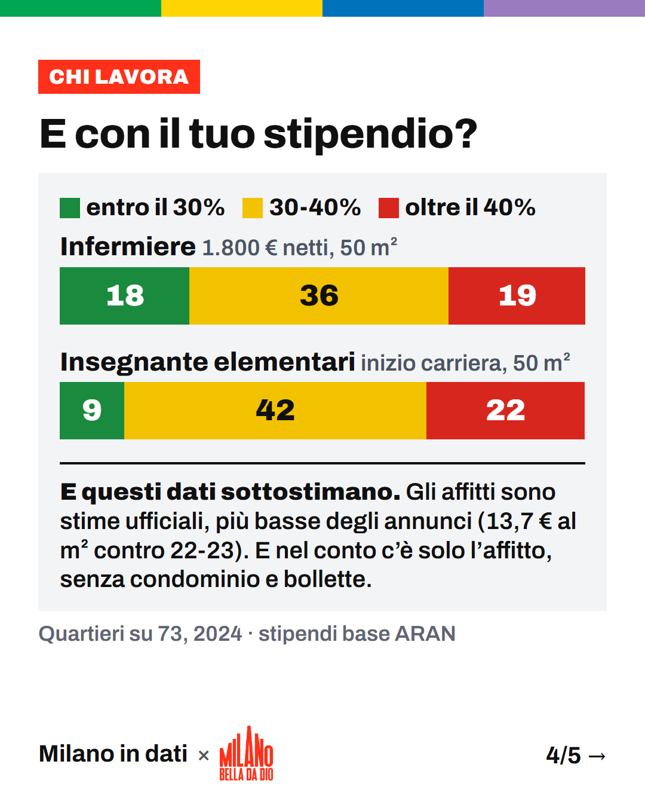
C · Rosa chiaro
fondo rosa tenue, titoli rossi
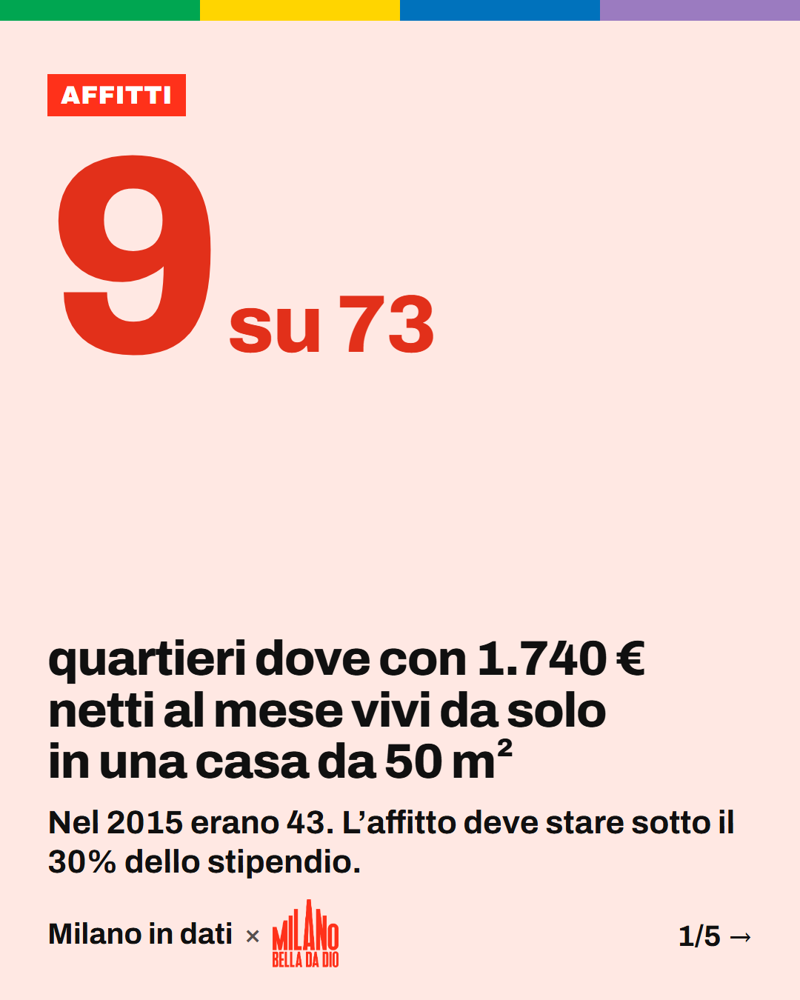
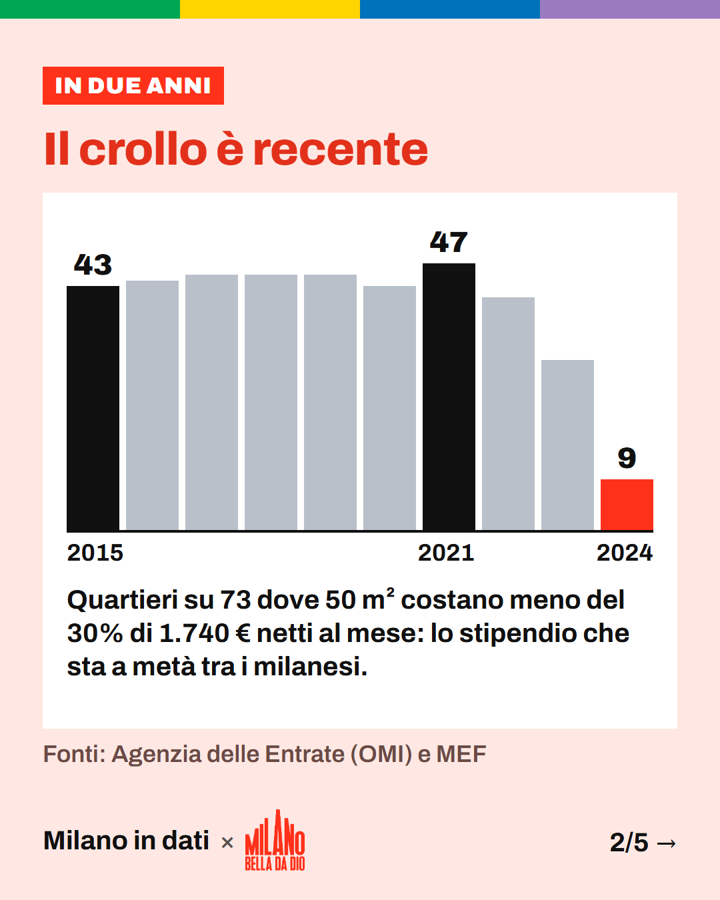
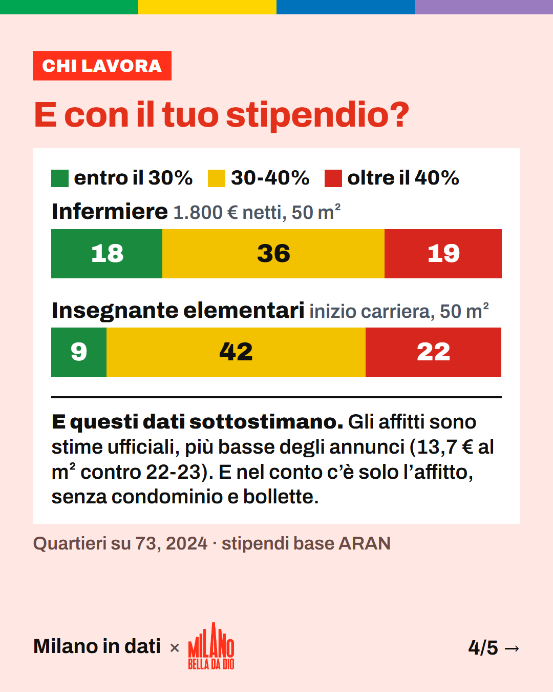
D · Nero e rosso
fondo scuro, numero in rosso chiaro
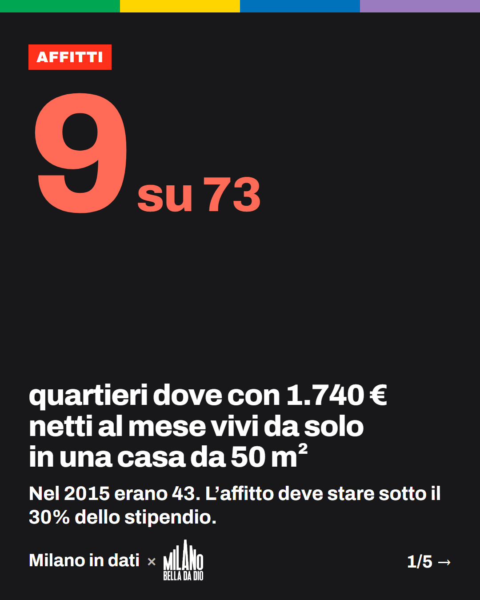
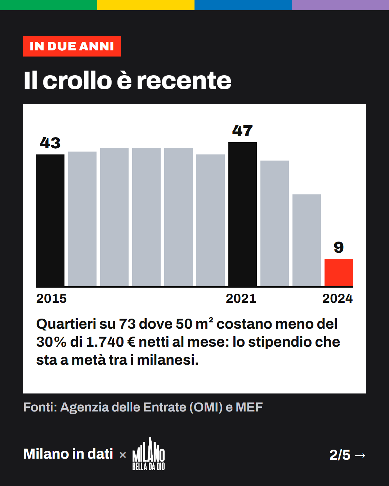
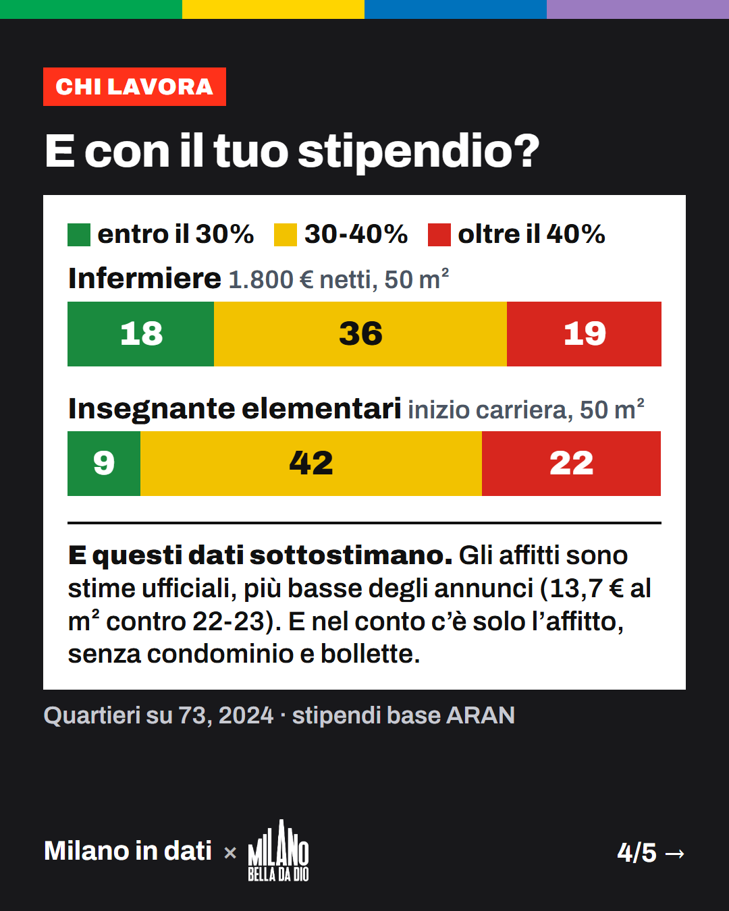